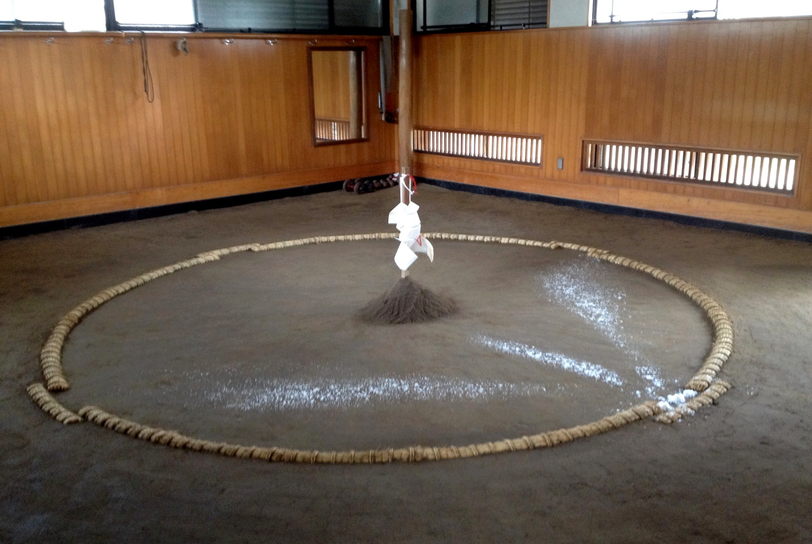

Το Σούμο δεν είναι απλώς ένα άθλημα δύναμης και πάλης. Είναι ένα παραδοσιακό ιαπωνικό άθλημα που έχει βαθιές ρίζες στη θρησκεία, στην κουλτούρα και στις τελετουργίες της Ιαπωνίας. Οι περισσότερες κινήσεις που βλέπει κανείς πριν από έναν αγώνα δεν είναι απλές κινήσεις προθέρμανσης, αλλά τελετουργίες που προέρχονται από την παράδοση του Σιντοϊσμού. Οι τελετουργίες αυτές συμβολίζουν τον σεβασμό προς τον αντίπαλο, την καθαρότητα του χώρου και την πνευματική προετοιμασία πριν από την αναμέτρηση. Τα παρακάτω τελετουργικά που θα διαβάσετε αφορούν το επαγγελματικό Σούμο. Μια και αυτή η πολεμική τέχνη είναι η αρχαιότερη της Ιαπωνίας, συνδέθηκε με την αρχαία θρησκεία της Ιαπωνίας, το Σιντοϊσμό, τα τελετουργικά του οποίου εστίαζαν στον εξευμενισμό των πνευμάτων για την παραγωγή της σοδειάς. Αυτός είναι ο λόγος που η έννοια της κάθαρσης θα εμφανιστεί πολλές φορές στο κείμενο.
Ο αγώνας διεξάγεται μέσα σε έναν κυκλικό χώρο που ονομάζεται dohyō. Πρόκειται για μια υπερυψωμένη πλατφόρμα από πηλό και άμμο, με διάμετρο 4,55 μέτρων.
Πριν από τη χρήση του πραγματοποιείται τελετή καθαγιασμού (Dohyō Matsuri), κατά την οποία τοποθετούνται προσφορές όπως:
Οι προσφορές αυτές συμβολίζουν την ευημερία και την αρμονία με τη φύση. Λέγονται αντίστοιχες προσευχές. Οι προσφορές θάβονται στο κέντρο του ντόχυο.
Πριν την είσοδο των αθλητών, ο κήρυκας φωνάζει τραγουδιστά τα ονόματά τους, καλώντας τους να εισέλθουν. Ο γιόμπιντασι φέρει ειδική ενδυμασία και κρατά βεντάλια.
Οι παλαιστές εισέρχονται στο ντόχυο φορώντας τελετουργική ενδυμασία. Κατά τη διάρκεια της τελετής χτυπούν τα χέρια τους, σηκώνουν τα χέρια για να δείξουν ότι δεν φέρουν όπλα και εκτελούν κινήσεις σεβασμού.
Πριν από κάθε αγώνα, οι παλαιστές παίρνουν μια χούφτα αλάτι και το πετούν μέσα στο ντόχυο κατά μήκος και κατά ύψος.. Η πράξη αυτή συμβολίζει τον καθαρισμό του χώρου από κακά πνεύματα και αρνητική ενέργεια. Η χρήση του αλατιού ως στοιχείου καθαρμού είναι πολύ συνηθισμένη στη θρησκευτική παράδοση του Σιντοϊσμού. Επίσης, εφόσον το έδαφος έχει καθαρθεί εξασφαλίζεται μια ασφαλής μάχη. Σε μεγάλους επαγγελματικούς αγώνες, οι παλαιστές ρίχνουν συχνά μεγάλες ποσότητες αλατιού, κάτι που έχει γίνει ένα από τα πιο αναγνωρίσιμα στοιχεία του σούμο.
Οι παλαιστές πίνουν νερό για εξαγνισμό στόματος και χρησιμοποιούν χαρτί από ρύζι για καθαρισμό, σύμφωνα με παραδοσιακές πρακτικές.
Το shiko είναι μια βασική κίνηση όπου ο παλαιστής σηκώνει το πόδι και το χτυπά δυνατά στο έδαφος. Συμβολίζει την απομάκρυνση κακών πνευμάτων και ταυτόχρονα αποτελεί βασική άσκηση δύναμης και ισορροπίας.
Οι υποκλίσεις και ο σεβασμός Ο αγώνας ξεκινά και τελειώνει με υπόκλιση. Οι παλαιστές υποκλίνονται ο ένας στον άλλον, δείχνοντας σεβασμό προς:
Οι παλαιστές παίρνουν θέση πίσω από τις γραμμές shikirisen και προετοιμάζονται για την έναρξη. Όταν τα χέρια αγγίξουν το έδαφος, ξεκινά το tachiai, η αρχική σύγκρουση.
Μετά την ολοκλήρωση κάθε αγώνα, οι παλαιστές επιστρέφουν στις θέσεις τους και δείχνουν σεβασμό προς τον χώρο και τον αντίπαλο.
Το ντόχυο διατηρείται συνεχώς καθαρό. Το χώμα ισιώνεται και προετοιμάζεται για τον επόμενο αγώνα, ώστε κάθε αναμέτρηση να ξεκινά σε έναν “καθαρό” και ισορροπημένο χώρο.
Σε αγώνες με χρηματικά έπαθλα, εμφανίζονται τελετουργικά banner (kenshō) πριν τον αγώνα, τα οποία απονέμονται στον νικητή.
Το mawashi είναι η ζώνη που φορούν οι παλαιστές και αποτελεί βασικό στοιχείο για τις τεχνικές λαβής και ελέγχου.
Ο gyōji διευθύνει τον αγώνα, φορώντας παραδοσιακή ενδυμασία και χρησιμοποιώντας ξύλινη πολεμική βεντάλια για τα σήματα.
Το Σούμο συνδυάζει τη δύναμη και την τεχνική με την παράδοση και τον σεβασμό. Δεν είναι απλώς ένα άθλημα, αλλά μια πολιτιστική πρακτική που διδάσκει πειθαρχία, τιμή και αυτοέλεγχο.
